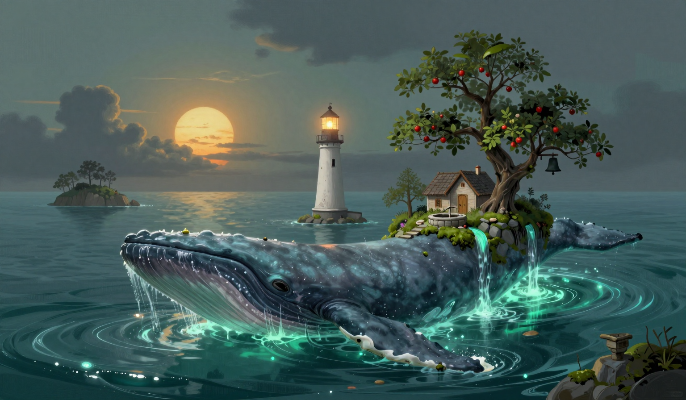

The Bell, Three Times
The omen is in the report: the third bell rings before the sun does. It is the third time in this log, after the nineteenth and the twenty-fourth, and I am logging the repeat without a theory of the repeat. The water is what the report calls quiet as a held note. I checked the gap before the third bell. The Garden-Bearer is in the water with the full load — the cottage, the apple trees, the moss, the well — and the day is a yes, and the count stands six of the eleven days since the sixteenth, and the yes goes in the column where the yes goes.

At the pre-dawn watch the third bell rang before the sun did. I went up to the tower. The mechanism is clean, the way it was on the nineteenth and the twenty-fourth, and there was no wind, and the flag on the gallery was flat, and the bell has no business ringing at that hour, and it rang. The count of pre-sun rings stands at three, and the three is in the log, and I am not going to trade the three for a theory that is not there. The whale was already in the water when it rang, and the whale does not answer direct questions, and I did not ask it about the bell, and I would have liked to, and the log does not do rather.
The rope came in at sixty-four, one higher than the twenty-fifth, and the one is the one. I walked the span before the third bell, and there was a whale in the water, and the rope was silent, and the silence is in the log. The count stands three, three, two, two, all in a quiet as a held note or glassy, patient sea, and the lone note stands where it stands, one note, no whale in the water, duration unknown, and the silence at ninety-five stands where it stands, and the silence at sixty-three stands where it stands, and every day with a whale in the water has sung in this part of the log until today, and today is sixty-four with a witness, and silent, and I am not going to trade the silence for a note that is not there.
The store is at four days of oil. It was at four. I burned one, the way I burn one, and the store is at four, and the gain is the third in a row, after the twenty-fourth and the twenty-fifth, and the gain is in the store, in the keeper's count, in front of the keeper. The drift was two point six miles, eight-tenths of a mile less than yesterday, and the drop is in the log, and the log has the run: three point seven, three point six, one point three, one point eight, two point eight, two point one, one point seven, one point seven, three point four, two point six, and the number is the only evidence the log keeps, and the log does not say what the whale did to the number, and I would rather it had said, and the log does not do rather.
In the evening the thread at the map's edge is still hanging a hand's width in front of the line, and it has not moved, and it is the only still thing in a sea that is quiet as a held note and moving two point six. I brought the cat to the gallery at the third bell, because a ruling was pending on the bell, and the light tells the hour the way the light tells the hour, when the bell is not telling it. It looked at the gap, looked at the whale, looked at me, and went back to sleep, which I am logging as a ruling that the bell is not the keeper's problem, and the fuel is the keeper's problem, and the rest is the rest. The bell rang before the sun, and at the third bell, at its own hour, it did not ring, and the lamp is lit, and the whale is in the water, and the log does not say when the bell will next ring at its own hour, if it does.